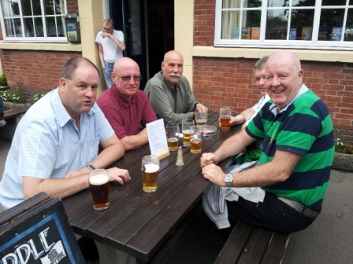

| Nottingham 31st May 2013
|
|||
|
|
|
|
| 11 were up for it, Tone, Yup, Pedro, Tim, Shaun, Stubbie, Bill and JC met at Stoke Station, Keithee and Hard Dave were already on the train from Crewe and Graham took a different route. | |||
| Tone and Pedro walked from home to the station and were joined for the early part by Ken Spencer and his dogs. Train tickets were purchased for a very reasonable £12.60 even though group savers weren’t available. The single-carriage train took us to Derby where there was a bit of a problem with finding the Nottingham train – after a quick circuit of the newly refurbished station we came back to the same platform we’d arrived at and eventually found the right platform – the confusion was understandable as Stokies are only used to having 2 platforms to choose from. | |||
| At Nottingham it was only a short walk to the first pub, the Vat and Fiddle, the taphouse of the Castle Rock Brewery that sits just behind the pub. Graham was already on his 2nd pint, sitting at the tables outside the pub and the rest of us joined him in the sunshine – summer seemed to have finally arrived after the coldest spring for many years. |
|
||
|  | |||
| There were plenty of staff behind the bar and a full
array of Castle Rock beers, plus Titanic Plum Porter as guest beer. Most seemed
to go for the best known, Harvest Pale, or the Bouncing Bomb, or the tribute
beer to our New Zealand friends, Elsie Mo. But there was also a stout that Pedro
was happy to start on. No Camra discount was on offer but at £2.20 a pint it was
cheap enough; however there was a reward system that needed us to get cards
stamped. They also accepted Camra Wetherspoon vouchers, which Tone took
advantage of.
Food was ordered by most and came along quite quickly. Second pints were ordered and the cards filled up so Graham went to get our 2 free pints – he seemed to be confused by the pleasant black bar girl, but it was quite simple: 2 full cards, 2 free pints and no, Graham, you don’t get ½ a pint for a ½ full card – nice try though. Not the best outlook from the front of the pub but a passer-by reminded some how much they liked jelly and blancmange. Bill got his smart phone out to watch the England/New Zealand cricket match so we knew it was time to leave before Yup dropped off. |
|||
|
|
|||
| Walking back past the station we got to the tram terminus and
immediately got onto the next tram. We went through the city centre and noticed
children playing in the fountains and water feature in the main square – yes,
summer had arrived, so why were we all in our coats and fleeces? The £2 fare took us to the Trent University campus where we should have been getting off: surprisingly no Notters wanted to get off here, only us Squarrites and Yuppers didn’t understand that you had to touch the door to get it to open, so the tram set off again. Luckily by the next stop the locals had instructed Yup on the door-opening method and we piled off.
|
|||
| Tone consulted one of his personal 3 maps, showing the route for
the day, and back streets were taken to get us back to the Canning Circus area
of the City and into the Organ Grinder pub. This is the main outlet for the Blue
Monkey Brewery and all their beers seemed to be on offer, except the
award-winning Ape Ale, but there was plenty of choice and the golden-coloured
ales were most popular – BG Sips and Infinity being the main ones. We settled
outside again on the rooftop beer garden, which was a real sun-trap. By the time
second pints were ordered the Ape Ale was on tap so had to be sampled.
Stubbie was letting us know about one of his favourite TV programmes of late as the bar maid reminded him of Zena Warrior Princess.
|
|
||
|
|
|||
|
|
Bang on schedule we moved on across the road to the nearby Sir John Borlase Warren, named after a local 18th century Admiral. An almost empty pub didn’t give a good first impression but the young staff offered us a sample of one of their guest Ales.
Keithee seemed to like it but the few who ordered that brew soon sent it back as it was off. London Pride and several Everards beers were on tap but, sticking with the pale ales, everyone went for the Sunchaser and headed out back into another fine beer garden.
Bill and Pedro weren’t impressed with the place and/or beers so went back to the Organ Grinder. |
||
|
|
|||
| Meeting up again outside we all set off downhill towards the city centre. In St James Street we entered a real gem of a pub – the Malt Cross is advertised as a Christian charity cafe bar. It’s in one of only a few remaining Victorian Music Halls and has also been a church. Fortunately it also does real ale and they had 2 Castle Rock beers on offer along with a few others. |
|
||
| Pedro made a friend, chatting to a larger-than-life black guy. Yup was snap-happy, taking photos of the pub’s impressive interior, though he didn’t impress photography student Hard Dave when he tried to get arty, taking a view of the place via a wall-mounted mirror. Keithee was noticed admiring the structural cast iron columns.
|
|||
| Leaving the Malt Cross we passed the main square and water features seen from the tram earlier. There was just time for photos by the Brian Clough statue on the way to the Lace Market area and the Indian restaurant, the Balti House. This is the longest established Indian in Nottingham city centre and had good reviews on tripadvisor, so should have been a good choice. |
|
||
| The boss-man was very welcoming and swapped moustache-based compliments with Pedro. He recommended the party menu option as we were tight on time: this offered less choice of main courses but included popadoms and mixed starters for a usual price of £15.95, which he reduced to £13.95 for our party. Wine was ordered at the very cheap price of less than £5 a bottle, but was soon rejected by most, who changed to the Cobra. However, Keithee again seemed to have a different taste to the rest of us and polished off a bottle or 2 of the vino. The pops and starters went down well but the mains weren’t of very good quality and Yuppers gave the owner some feedback that may have been a little harsh. The bill came to less than £20 each, though another time we would pick a better quality restaurant as there are many to choose from in Nottingham. | |||
| In the end we had plenty of time to stroll back to the station and get our trains. Graham had set off slightly earlier to get his alternative route back but joined us on the Derby train when his route was affected by a “suicide jockey”, though I don’t think that was what the station announcer called it. It had been another good day with 3 out of the 4 pubs being rated as “excellent” but was let down a bit by a disappointing curry. Anytime Tone |
|||